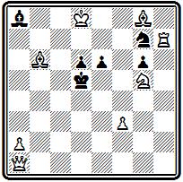

Приведем еще одну задачу Минквица № 000 из посылки, премированной на английском конкурсе.
№ 000
И. Минквиц «Вестминстер пейпер» 1872 I приз
Мат в 4 хода
И здесь мы видим два равноценных главных варианта с хорошими правильными матами:
1. Kd6 C:c6 2. Лd1+ Kpc5 3. Кb7+ Крс4 4. Ка5# и 1... Л:f8 2. Лd1+ C:d1 3. Фе4+ Крс5 4. Кb7#.
Это направление не получило развития среди немецких композиторов. Победило направление с подчеркнутой, явно выделенной главной игрой. Начатое Байером, развитое и продолженное Бергером, оно привело к созданию немецкой школы в задачной композиции.
Глава 6
ЗАДАЧНАЯ КОМПОЗИЦИЯ ВО ФРАНЦИИ
Международные конкурсы во Франции. Творчество французских композиторов.
Аноним из Лилля — Эрлен. Ламуру. Гродеманж. Прадинья
Шахматная композиция во Франции имеет глубокие корни. В Париже было выпущено первое издание сборника эндшпилей Стаммы. Здесь же в 1802 г. была издана интересная книга «Шахматные стратагемы или коллекция наиболее замечательных и курьезных шахматных позиций, как из обычных партий, так и искусственно составленных, выбранных из работ разных авторов, частично еще неопубликованных». Автор ее — Монтиньи — скрылся под псевдонимом «Любитель». Творчество французского композитора д'Орвилля явилось важным этапом в формировании и развитии современных принципов задачной композиции.
Во Франции с 1836 г. стал выходить первый в мире шахматный журнал «Паламед». Его издатель и редактор знаменитый Лабурдоне сам был композитором и вел в журнале регулярный отдел задач. С его смертью в 1840 г. издание прервалось и было вновь возобновлено в 1842 г. Сент-Аманом, продолжавшим его до 1847 г. Последний период существования журнала относится к гг., когда его (под несколько измененным названием — «Паламед франсэ») редактировал Журну.
В 1846 г. в Париже и одновременно в Лейпциге вышел сборник задач, составленный А. Александром.
Франция явилась организатором пяти из упоминавшихся ранее 14 больших международных конкурсов 50-70-х годов. Особенно интересно был задуман конкурс 1867 г., организованный в связи с шахматным конгрессом, приуроченным к международной выставке в Париже. Разрешение присылать в составе посылки из 6 задач половину ранее уже опубликованных и даже премированных делало этот конкурс своеобразным смотром достижений в развитии композиции по современным принципам.
Через два месяца после опубликования «индийской задачи» в апрельском номере «Паламед» за 1845 г. появилась задача № 000 «Анонима из Лилля».
№ 000
Т. Эрлен «Паламед» 1845
Мат в 4 хода
Ее решение очень интересно: 1. Крс7 Кра5 2. Cf6 Кра6 3. Cd8 Кра5 4. Крb7#. Оно несколько напоминает «индийскую задачу». Здесь белый слон также совершает маневр, переводящий его за критическое поле с7, которое занимает король, объявляющий затем мат на вскрышку. Отличие заключается в том, что ход слоном осуществляется не по самой критической линии, а по параллельной. В дальнейшем идея этой задачи получила название «обходный маневр Эрлена». Такова была действительная фамилия французского композитора, автора этой задачи.
Творчество Эрлена было не очень продуктивным. Выступал он редко. Наибольший его успех — II приз в конкурсе «Режанс» 1860 г., где он участвовал посылкой, состоявшей из 15 задач. Лучшие из задач Эрлена содержат интересные стратегические маневры, тонкие идейные нюансы, не потерявшие интереса и до настоящего времени.
В задаче № 000 ясно, что матовать необходимо батареей. Но в начальном положении белый слон атакован черным. Укрыться от его преследований можно только в угол, но там стоит своя же ладья. Ее надо увести.
№ 000
Т. Эрлен «Режанс» 1860 II приз

Мат в 4 хода
Решает уход с темпом — 1. Л:а4, создающий угрозу мата на а8 и потому вынуждающий слона покинуть диагональ b3-g8. Итак, 1... С:а4 2. Ca1. Напасть на слона белых теперь нельзя и как будто неизбежно 3. Лg4+ Се5 4. С:е5#. Однако защита находится - 2... Cf8. Теперь в случае 3. Лg4+? Cg7 4. С:g7+ мата действительно нет, но зато блокируется поле f8 и оказывается возможным 3. Лg8+ Кр:g8 4. Сс4#. Вот для чего понадобилось отвлечение слона b3! Видимо ни Эрлен, ни Умнов не заметили, что после отвлечения слона, кроме 2. Ca1 возможно и 2. Cf6 Ce7 3. Cc4! h5 4. Л:e7#. Чтобы не допустить этого, достаточно белого короля переставить на поле h4.-
Т. Эрлен «Режанс» 1860 II приз (версия)

Мат в 4 хода
Решение остается прежним. Добавляется еще такой вариант - 2… Ce7+ 3. Лg5+ Cf6 4. C:f6#.
В примере № 000 осуществлена интересная идея, которую позже стали называть идеей самоуничтожения. План белых очевиден, надо попасть ладьей на восьмую горизонталь, чтобы матовать с поля h8. Но все пути туда как будто наглухо заставлены собственными пешками. Белые изыскивают способ сыграть пешкой «а» таким образом, что вынужденные взять ее черные сами вскроют для ладьи вертикаль «а»:
№ 000
Т. Эрлен «Режанс» 1860 II приз
Мат в 5 ходов
1. Крb2 Сb8 2. а7 С:а7 3. Ла1 Сb8 4. Ла8 Са7 5. Лh8# .
Черный слон действует как четко работающий клапан — в нужный момент он открывает магистрали для белой ладьи.
Любопытна позиция № 000, в которой «героем» неожиданно становится казалось бы безнадежно отставшая и блокированная пешка g2:
№ 000
Т. Эрлен «Режанс» 1860 II приз

Мат в 4 хода
1. Фf2 gf 2. g4 Cf(h)5 3. gf(gh) Kg6 4. f(h)g#.
Здесь портит впечатление дуаль на матующем ходу - 4. Л:f7#. Избежать этого можно такой корректировкой -
Т. Эрлен «Режанс» 1860 II приз (версия)

Мат в 4 хода
1. Фf2 gf 2. g4 Cf(h)5 3. gf(gh) Kg6 4. Л:f7#, правда роль отважной пешки преуменьшается…
Эрлену принадлежит одна из популярнейших двухходовок середины века № 000 -
№ 000
Т. Эрлен 50-е годы XIX век

Мат в 2 хода
Несмотря на кажущуюся простоту, она содержит некоторые тонкости и решается уходом ферзя в угол 1. Фh1, что оказывается единственным эффективным способом защиты обеих ладей.
В несколько ином стиле работал известный композитор Гродеманж. В своих лучших произведениях он ближе к творчеству немецких композиторов. Задача № 000 построена очень интересно -
№ 000
Э. Гродеманж Парижский конкурс 1867 III приз

Мат в 4 хода
Ходом 1. Ке4 белые создают угрозу мата конем на с5. Черные могут защищаться слоном h2. В зависимости от того, какое поле для слона — g1 или d6 — они изберут, выбирает поле отступления и белый слон d2. В результате получаются два варианта с перекрытием Новотного: 1... С:d6 2. Cf4 (освобождая поле d2 для угрозы мата конем) 2... Се7 3. Cd6 Л(С):d6 4. К:c5(d2)# или 1... Cg1 2. Сb4 Л:d6 3. Kd4+ Л(С):d4 4. K:c5(d2)#.
В проблеме № 000 белые тихими маневрами отвлекают черную ладью с ее сильной центральной позиции и получают возможность осуществить завершающую жертву:
№ 000
Э. Гродеманж «Режанс» 1860

Мат в 5 ходов
1. Лh1 Cd8 (грозило 2. Лh5#) 2. Ле1 Л:e1 (иначе 3. Л:е4#) 3. Ке2 (выключая черную ладью и грозя 4. d4#) 3... Лd1 4. К:f4 Кр:f4 5. Cd6#.
Своеобразный стиль отличает и произведения Ламуру. Его привлекали сложные тяжелые построения с картинными геометрическими маневрами белых или черных фигур. Рассматривая начальную позицию задачи № 000, трудно поверить, что черный король, который уже почти окружен в центре доски, получит мат на поле g8
№ 000
Д. Ламуру Лондонский конкурс 1862 (версия)
Мат в 5 ходов
После 1. Ле3, грозящего 2. Са2#, начинается марш черного короля, преследуемого белыми фигурами: 1... Kpd5 2. Се4+ Кре6 3. Ф:g4+ Крf7 4. Ф:g8+ Kp:g8 5. Cd5#.
(в оригинале вместо пешки g4 были белые пешки e6 и h3, что приводило к дуали на 3-м ходу)
В композиции № 000 белые имеют в виду матовать ладьей d6 c f2.
№ 000
Д. Ламуру «Паламед франсэ» 1865 I приз

Мат в 5 ходов
Для этого надо увести коня f2 с темпом, чтобы черные не успели построить защиту: 1. Ке4 (грозят сразу три мата, и ферзь вынужден брать коня) 1... Ф:е4 (оказывается, угроза 2. Лd2 не проходит из-за шахов белому королю, надо еще отвлечь черного ферзя от диагонали b6-g1) 2. Сb7 Ф:b7 3. Фа8 Ф:а8, и только теперь можно осуществить угрозу 4. Лd2 ~ 5. Лf2#.
В задаче № 000
№ 000
Д. Ламуру «Паламед франсэ» 1865 I приз (версия)

Мат в 5 ходов
черные препятствуют немедленному 1. Л:g4? ~ 2. Лg6# шахом 1... Ф:с2+!. Чтобы парировать эту возможность, белые связывают черного ферзя, играя своим ферзем в угол доски 1. Фа1. Черные подводят резервы 1... Kd3. Теперь конь закрыл диагональ с2-h7, по которой черные объявляли шах, и белый ферзь может последовать во второй угол доски 2. Фh1 (угрожая 3. Ф:f3+ ~ 4. Лf5#) 2... Лf2 3. Лf4+ (с темпом открывая диагональ для ферзя) 3... Л:f4 4. Фа8. Ферзь попал в третий угол доски, чтобы следующим ходом объявить мат с последнего углового поля 5. Фh8#.
К теме обхода ферзем всех угловых полей доски Ламуру еще не раз возвращался в своем творчестве.
Преемником и продолжателем Ламуру в ранний период деятельности был видный французский проблемист Эмиль Прадинья. Начав составлять задачи в 1873 г., он продолжал успешно выступать и в начале нынешнего века. Итоги первого десятилетия творчества Прадинья отражены в сборнике 100 лучших его произведений, выпущенном в 1883 г. (23).
Задача № 000 построена на использовании геометрических мотивов. Сначала ферзь, а затем слон далекими ходами занимают угловые поля доски.
№ 000
Э. Прадинья Парижский конкурс 1878

Мат в 4 хода
1. Фf3 f5 2. Фа8 Кbа6 3. Ch8 и т. д.
Любопытна финальная позиция цугцванга: главные белые фигуры стоят в трех углах доски, а в четвертом находится черный король -

Другой вариант проще, но заканчивается правильным матом: 1... Кbа6 2. Фе4 С:с3 3. Л:b1+ ab 4. Ф:b1#. Автору удалось осуществить свой замысел в относительно легкой и экономичной форме.
Однако Прадинья нередко выступал с задачами, имеющими столь сложное построение, такое обилие фигур, что в них очень трудно было добраться до сути. По сложности некоторых своих произведений он превзошел, пожалуй, даже своего учителя Ламуру. Примером может служить задача № 000
№ 000
Э. Прадинья Парижский конкурс 1878

Мат в 3 хода
Основная идея ее заключается в главном варианте с бристольским освобождением линии для ферзя: 1. Лf8 fe 2. Фf7 Крс2 3. К:е3#. Ферзь стремился на f7 для того, чтобы при объявлении мата конем отнять у черного короля поле b3. После первого хода черные в цугцванге: 1... Kpe1 2. Kg3+; 1... Крс2 2. С:d3+.
Сложное построение композиции совсем не является неизбежным. Сам автор доказал это, когда через пару десятилетий, в 1895 г., выступил с ее переработкой, в которой ему удалось снять с доски ни мало ни много — 6 фигур при полном сохранении основного идейного содержания!
Э. Прадинья «Франкфуртер тагеблат» 1895 почетный отзыв

Мат в 3 хода
1. Лd8 de 2. Фd7 и т. д.
Последняя задача (№ 000) входила в посылку Прадинья, которой судьи Парижского конкурса 1878 г. в предварительном присуждении дали I приз. В дальнейшем, однако, обнаружилось, что Прадинья нарушил условия конкурса, послав на него одновременно еще две посылки под другими девизами. Обе они были оценены также высоко: получили IV приз и почетный отзыв. Решением судейской коллегии все посылки Прадинья были дисквалифицированы.
К концу столетия Прадинья, не без влияния немецких композиторов, несколько меняет свой стиль. Он больше начинает интересоваться финальной комбинацией, непосредственно завершающейся матом, тем, что Бергер называл «матфюрунгом». Уже в ранних произведениях Прадинья встречалась эффектная заключительная жертва ладьи. В дальнейшем такая комбинация, проводимая, как правило, на соседнем с королем поле по диагонали, становится основной идеей многих его композиций.
В задаче № 000 такое пожертвование ладьи осуществляется уже первым ходом.
№ 000
Э. Прадинья «Миррор оф америкэн спортс» 1885 I приз

Мат в 4 хода
1. Kf3 (грозит 2. Ле5#) 1… fе 2. Фg5#; 1... Кр:е4 2. Ле6+ Kpd5 3. Ле5# или 2... Kpf4 3. Фg3#. Главный вариант возникает при взятии ладьи слоном 1... С:е4. Слон угрожает взять еще коня f3, и для его отвлечения белым не жаль ферзя 2. Фс2 (создавая угрозы на b3, с4 и на с5 — 2... Ла4 3. Ф:с5+ Ф:с5 4. Кс7#) 2... С:с2, а теперь снова та же комбинация уже второй ладьей — 3. Ле6, грозит 4. Ле5#, а на 3… Кр:е6 следует правильный мат 4. Сс4#. Дополнительный вариант: 1... С:b5 2. Лd4+ cd 3. Kh4+ Kpe5 4. К:g6#.
Следствием пересмотра идейных позиций явилось и сокращение числа ходов в задачах. Основной формой творчества Прадинья в последние годы стали трехходовки. В проблеме № 000 комбинации с двойной жертвой ладьи проводятся в двух параллельных вариантах:
№ 000
Э. Прадинья «Иллюстрирте фамилиен журналь» 1896 I приз

Мат в 3 хода
1. Ле6 С:е6 2. Лd5 С:d5 3. Фg6#, 2... Кр:d5 3. Фb7#; 1... Kpf5 2. Фb7 С:е6 3. Фh7#, 2... Кр:е6 3. Фd7#. Оба мата в первом варианте — правильные.
Прадинья все больше внимания обращает на правильность матовых позиций. Приведем пример (№ 000), где, помимо идейного варианта с типичной жертвой ладьи, проходят два дополнительных варианта с правильными матами.
№ 000
Э. Прадинья «Нуова ривиста дель скакки» 1897 I приз

Мат в 3 хода
Первым ходом 1. Kd5 белые перекрывают слона с6 и создают угрозу 2. Cd3. После 1... С:d5 блокировано поле d5 и реализуется жертва ладьи: 2. Кb5 Кр:е4 3. К:d6# или 2... С:е4 3. Kd4# (мат только чистый, но неэкономичный, ибо слон а6 в нем не участвует). Дополнительные игры: 1... Кр:е4 2. f3+ Кр:d5 3. Сс4# и 1... Се3 2. Ке7+ Кр:е4 3. f3#.
Последние примеры по своему стилю весьма близки к работам венской группы композиторов конца прошлого века.
Творчество французских композиторов XIX века было весьма плодотворным и явилось значительным вкладом в развитие современной композиции. Однако в этом творчестве не было такой целеустремленности и направленности, которые позволили бы французским композито
ЧАСТЬ III ФОРМИРОВАНИЕ НАЦИОНАЛЬНЫХ ШКОЛ
Глава 7
АНГЛИЙСКАЯ ШКОЛА
Стили и школы. Принципы английской школы. Лоус. Плэнк.
Сборник «Шахматная задача. Руководство с иллюстрациями».
Воплощение принципов английской школы в двухходовых и трехходовых задачах. Хискот. Тавернер. Мэкензи
Уже на раннем этапе развития современной композиции обнаруживается заметное различие стилей. Даже в одной и той же стране при некоторых общих принципах построения задач бросаются в глаза индивидуальные особенности отдельных композиторов. Мы видели, как разнятся между собой, скажем, задачи Брауна и Гримшоу или Хили и Кэмпбелла. А в целом композиции английских авторов имеют иной характер, чем задачи Байера и Бергера.
Особенности стиля композиторов разных стран метко определил Лойд, с творчеством которого, ярко оригинальным и непохожим на творчество подавляющего большинства его современников, нам еще предстоит познакомиться. Так вот, Лойд писал, что в международных конкурсах его времени можно встретить совершенно разные произведения:
массивные, бесстрастные комбинации тевтонцев, забывающих считать стоящие на доске фигуры;
вялый, легкомысленный стиль венецианцев, нередко оставляющих свою работу незавершенной;
разнообразные примеры французских авторов, у которых подлинный сверкающий бриллиант или чистейший рубин может соседствовать с бесцветной посредственностью;
ясные, законченные и гладкие, как у хороших ремесленников, задачи бриттов с правильными решениями, покоряющие результатом, наступающим с неизбежностью механического закона; невероятно трудные задачи, отражающие суровость и строгость северного климата.
К этому еще необходимо добавить неизменно оригинальные, поражающие остроумием и неожиданностью замыслов произведения самого Лойда.
Возникшие первоначально у отдельных наиболее выдающихся композиторов, эти характерные черты закрепляются затем в творчестве их последователей, прежде всего из числа соотечественников. Привлекая все новых сторонников, стиль становится господствующим среди композиторов данной страны. Возникает школа.
Школа в задачной композиции, как и в любом другом виде искусства, предполагает наличие четко осознанных принципиальных особенностей данного направления, отличающих его от других направлений. Именно потому, что таких четких принципов не выдвинули, например, французские композиторы, они не создали своей школы. Школа предполагает, далее, наличие определенного, более или менее широкого круга авторов, активно работающих в данном направлении.
Принято говорить о трех больших национальных школах в задачной композиции XIX века; английской, немецкой и чешской. Все они сложились к концу 70 - началу 80-х годов как результат творчества группы энтузиастов-композиторов, работавших в каждой из этих стран. Примерно в одно время, в гг., вышли теоретические работы, своего рода манифесты этих школ, дающие обстоятельное изложение их основных принципов.
Ознакомление с характерными особенностями и творческими достижениями трех названных школ мы начнем с английской.
70-е годы в английской композиции характеризуются появлением ряда новых имен и изменением направления творчества. Английские композиторы почти прекращают работу над задачами с числом ходов больше трех. Значительное развитие получает двухходовая задача.
В области трехходовки наибольших успехов добивается в это время Д. Финлинсон. Особое внимание он уделяет задачам, содержащим единственный вариант, в котором разветвление игры получается только после второго хода белых. В примере № 000 -
№ 000
Д. Финклинсон Конкурс Британской шахматной ассоциации 1873 III приз

Мат в 3 хода
после 1. Cd4 грозит 2. Ка5#. Защита одна — 1... Ла6. В ответ на это белые делают выжидательный (кстати, тоже единственный) ход 2. g3, после чего черные, несмотря на обилие фигур, оказываются в цугцванге.
Композиция № 000 по конструкции и игре может удовлетворить самые взыскательные вкусы.
№ 000
Д. Финклинсон Конкурс Британской общества проблемистов 1879 I приз

Мат в 3 хода
Тонкое вступление 1. Се3 ставит черных в положение цугцванга. Наиболее интересный вариант получается при 1... Крс6. Красивый длинный марш ферзя 2. Фf1 снова приводит к цугцвангу с четырьмя аналогичными матовыми положениями: 2... Kpd5 3. Фb5#; 2... Крb7 3. Фb5#; 2... d5 3. Фа6#; 2... Сb7 3. Фс4# .На 1... Крс4 решает другой тихий ход ферзя 2. Фb1; если же 1... Kf5, то 2. Лс7.
Все же подобные задачи с удлинением основного варианта на один ход выглядят искусственными. Поскольку главная игра сосредоточена в единственном варианте после второго хода белых, естественно отбросить первый ход и составить двухходовку.
Возможно, одной из причин возникновения удлиненных задач был ничтожный интерес к двухходовке. Ими английские проблемисты почти не занимались. В печати, в частности в отделе Стаунтона двухходовки до самого начала 70-х годов были редкостью, конкурсы на их составление не проводились, в конкурсных посылках могли участвовать только задачи с числом ходов не менее трех.
Едва ли не первым конкурсом, в который были включены и двухходовые задачи, явился Белфастский конкурс 1863 г. В соревнованиях международного масштаба композиции этого рода впервые появились в конкурсе Британской шахматной ассоциации 1873 г.
Лучшей поданному разделу была признана задача № 000 -
№ 000
И. Клинг Конкурс Британской шахматной ассоциации 1879 I приз
Мат в 2 хода
После 1. Фа1 черные разными способами лишают своего короля свободного поля f6, вследствие чего становится возможным 2. Kg7#. На уход короля 1... Kpf6 матует 2. Лf4# при двух связанных черных фигурах.
С этого времени начинается пора бурного развития двухходовки. В том же отделе Стаунтон в 1872 г. вынужден был писать:
«Двухходовок мы получаем теперь больше, чем можем их публиковать».
Интересен пример № 000.
№ 000
Д. Гюнтер «Джентлменс джорнэл» 1872

Мат в 2 хода
Выжидательное вступление 1. Ch8 сохраняет готовый в начальной позиции цугцванг черных и приводит к целой серии разнообразных вариантов.
Большим мастером двухходовки зарекомендовал себя Д. Тейлор. Как писал позже А. Мэкензи: «Тейлоровские двухходовки были блестящими и строгими примерами комплексного типа задач, распространенных среди композиторов стран английского языка; их характерные черты — свободный черный король и полное отсутствие дуалей».
В задаче № 000 -
№ 000
Д. Тэйлор Конкурс Британской общества проблемистов 1879 I приз

Мат в 2 хода
1. Фg1 дает черному королю третье свободное поле, но приводит к цугцвангу. На безразличное отступление коня е3 белый ферзь матует с a1 или g7. При защитах коня на d5 или f5 белые пользуются блокированием ноля у короля и матуют соответственно 2. К:d7# и 2. Kg4#. На ответы короля проходят маты ферзем или конем.
А композиция № 000 обращает на себя внимание тем, что в двух главных вариантах осуществляется превращение белой пешки в коня:
№ 000
Д. Тэйлор «Чесс чипс» 1878

Мат в 2 хода
1. с7 Лb8 2. сbК#; 1... Крb7 2. с8К#.
Важным стимулом развития композиции в Англии явилось значительное увеличение числа отделов в периодических изданиях и проводимых ими конкурсов. Изменились также характер этих конкурсов и форма их организации. Если раньше они проводились по системе посылок, что делало их малодоступными для рядовых композиторов, а конкурсы отдельных произведений являлись редким исключением, то с конца 70-х годов последняя система становится правилом. Конкурсы организуются раздельно по каждому виду задач, и отличия присуждаются отдельным произведениям.
Англия занимала первое место по количеству конкурсов. Ряд изданий проводит их систематически. Большой популярностью пользовались, в частности, ежегодные конкурсы «Хаддерсфилд колледж мэгезин», журнала, который с 1880 г. был преобразован в ежемесячник «Бритиш чесс мэгезин», продолжающий издаваться до наших дней. Вскоре начинают организовываться тематические состязания. Известны, например, английские конкурсы 80-90-х годов на задачи при наличии на доске не более 10 фигур, определенного набора белых и черных фигур, с первым ходом, развязывающим две черные фигуры, без белого ферзя и т. п. В одном из соревнований требовалось, чтобы в начальном положении черный король стоял в центре доски, а белые фигуры размещались как можно дальше от него, в другом — чтобы в двухходовке было 4 варианта с матами ферзем на разных полях. Уже к области курьезов принадлежит, что в одном американском конкурсе присуждение проводилось по трем разделам: задачи «легкого веса» до 40 единиц, «среднего»— 40-55 и «тяжелого» — более 55. «Вес» определялся по наличию белых фигур: ферзь оценивался 15 единицами, ладья — 9, слон и конь — по 5, пешка — 2.
В формировании принципов английской школы важную роль сыграло творчество двух выдающихся ее представителей — Б. Лоуса и Ч. Плэнка.
Бенджамен Лоус начал составлять задачи в 1878 г. и уже в следующем году выдвинулся в число ведущих проблемистов Англии. Уже в ранних произведениях Лоус обнаруживает свой творческий стиль и последовательно развивает его в дальнейшей работе.
Задача № 000 составлена на знакомую нам тему свободного черного короля.
№ 000
Б. Лоус «Эр аргус энд экспресс» 1880 I приз
Мат в 2 хода
После 1. Ке3 у короля три свободных поля. Новым является то, что в идейных вариантах при отступлениях короля все маты чистые: 1... Kpd6 2. Кс4#; 1... Kpf6 2. Kg4#; 1... Kpf4 2. Ке6#. В трех других вариантах осуществляется блокирование полей у короля: 1... Kd6 2. Kg4#; 1... Kf6 2. Кс4#; 1... е6 2. Ке2#.
Легкое, изящное построение при весьма ограниченном материале у черных, четкая игра без дуэлей, чистые, а то и правильные маты — вот основные черты стиля Лоуса.
Две следующие задачи принадлежат к его лучшим двухходовкам.
В позиции № 000 силы черных немногочисленны — лишь слон и ладья, а какая развертывается интересная игра!
№ 000
Б. Лоус «Нортен фигаро» 1888 I приз
Мат в 2 хода
Красиво вступление 1. Лd6, жертвующее ладью. На взятие ее королем и слоном следуют чистые маты: 1... Кр:d6 2. Фс7# и 1... С:d6 2. Фg7#, на взятие ладьей — даже правильный: 1... Л:d6 2. Kg4#. Ладья создает еще два варианта: 1... Л~ 2. Ch2# и 1… Лd4 2. Ле6#; при 1... С~ матует 2. Фе7#; наконец, 1... Kpd4 2. Ф:d5#.
Эффектен первый ход и в задаче № 000,
№ 000
Б. Лоус «Ямайка глинер» 1885 II приз
Мат в 2 хода
где ферзь удаляется из игры и становится под удар пешки — 1. Фа5. В результате цугцванга осуществляется ряд интересных вариантов: 1... bа 2. Сс5#; 1... Kpf2 2. К:g4# (эти два мата — чистые); 1… f2 2. Фс3#; 1... Cg~ 2. Фе1# и т. д.
Отмеченные черты стиля Лоуса реализовались и в трехходовой форме. Задача № 000 построена с угрозой.
№ 000
Б. Лоус Мельбурнский конкурс 1888 II приз
Мат в 3 хода
После 1. Фh6 на безразличный ход черных, скажем, 1... g2 последует 2. Фс1 и 3. Cf6# (2... Кре5 3. Фе3#). Черные могут защищаться, вводя в действие коней, но тогда блокируются поля и проходят два аналогичных варианта с правильными матами: 1... Kb6 2.Cf6+ Крс5 3. Фf8# и 1... Kf2 2. Фg7+ Кре3 3. Cg5# (1... Крс3 2. Фc1+, 1... Сb2 2. Фf4+).
Одна из лучших трехходовок Лоуса приведена на диаграмме № 000.
№ 000
Б. Лоус «Бредфорд обсервед баджит» 1890 I приз

Мат в 3 хода
Защищаясь от созданной вступлением 1. Сh2 угрозы 2. Кс7+, черные создают ряд вариантов, заканчивающихся правильными матами: 1... Крс4 2. Ф:a4+ Kpd5 3. Кс7#; 1... Кре4 2. К:с3+ К(С):с3 3. Фd3# или 2... Kpf5 3. Фс8#; 1... с4 2. Фb7+ Kpc5 3. Cd6# или 2... Кре6 3. Kd4#.
Позиция № 000 одна из немногих четырехходовок Лоуса, но зато она вошла в сокровищницу классических произведений мировой композиции.
№ 000
Б. Лоус «Чесс мансли» I приз

Мат в 4 хода
Все создает впечатление полной законченности. Некоторую пикантность придает игре наличие симметрии в главных вариантах: 1. Фc6 d3 2. Kc7+ Кр:е5(е3) 3. Kc4+ Kpf4 4. Ке6# или 2... Kpd(f)4 3. Ke6+ Кре3 4. Кс4#; 1… f4 2. Фg6+ Кр:е5 3. Кb4 f3 4. Kd3# или 3... d3 4. Кс6#. Дополнительная игра: 1... Kpd3 2. Фс1 f4 3. Фb1+ или 2... Кре4 3. Фе1+; 1... Кр:е5 2. Фf6+ Кре4 3. Фе6+.
Повышенное внимание к правильным матам несколько выделяет Лоуса среди других английских композиторов этого периода. Из-за этого Лоуса даже причисляли к последователям чешской школы. Сборник его задач, составленный И. Киблем и выпушенный Уайтом в 1933 г., носит название «Английский чех» (24). Это не совсем верно, так как у Лоуса правильные маты никогда не были основой замысла. Для него они — лишь завершение разнообразной игры, проходящей в вариантах задачи. Лоус является одним из основоположников и лучших мастеров английской школы, продолжившим на более высоком уровне стиль Брауна.
В предисловии к указанному сборнику И. Кибл описывает, как Лоус представлял себе идеал современной задачи:
«Совершенная четырехходовка должна иметь очень тихий и неожиданный первый ход;
угрозу в полные 4 хода, приводящую к восьми совершенно различным и одинаково красивым вариантам, по крайней мере половина из которых должна дальше еще разветвляться на три или четыре различных продолжения;
каждый мат (а их должно быть больше двадцати) должен быть правильным, а некоторые также зеркальными;